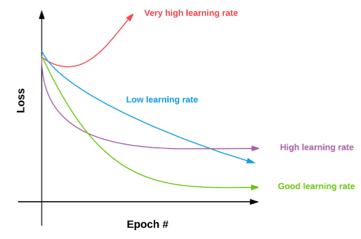

13 · LR Schedules — Cyclic
Cyclic schedules and practical recommendations
Cyclic Learning Rate (CLR)
Oscillate the learning rate between ηmin and ηmax on a fixed cycle. Helps escape local minima and saddle points during training.
ηt = ηmin + (ηmax − ηmin) · tri(t / 2s)
where tri is a triangular wave and s is the step size (half-cycle length).
1cycle policy (Leslie Smith)
A single cycle: ramp the LR up from ηmin to ηmax, then decay back — often finishing below ηmin. Momentum is cycled inversely.
- Achieves strong results in far fewer epochs
- Acts as implicit regularization
- Works well with large batch sizes
- Default in fast.ai; competitive on vision benchmarks

Practical defaults: cosine annealing is a safe choice for most tasks; add warmup when training transformers or with large batches; try 1cycle when training time is limited and you want strong baselines quickly.